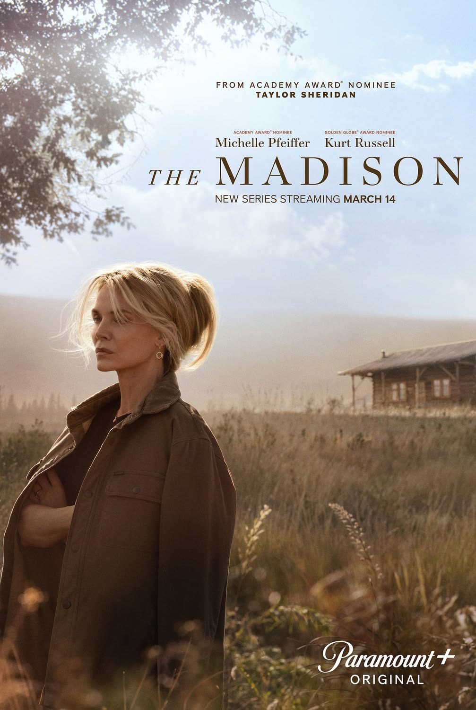
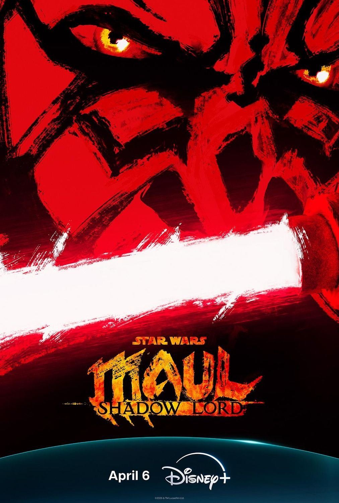
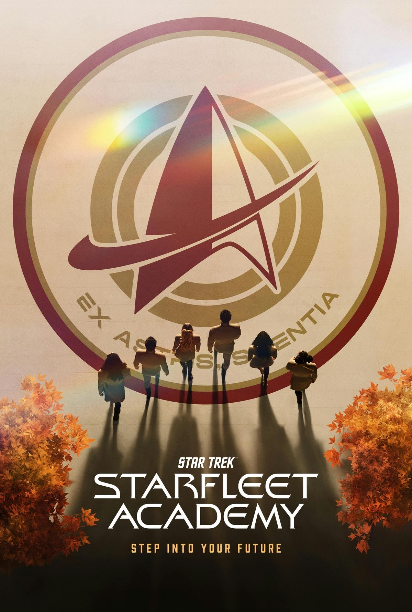
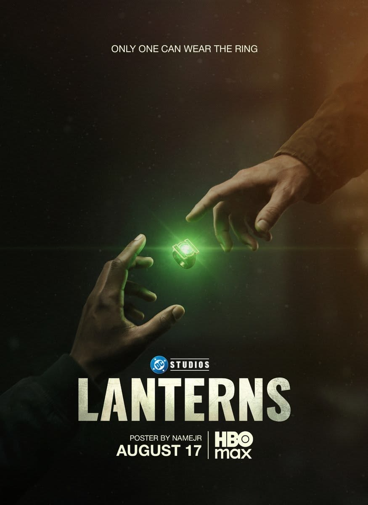
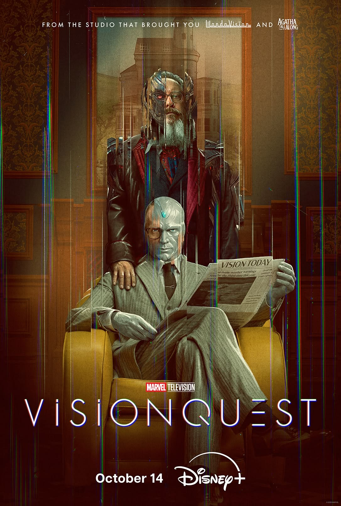
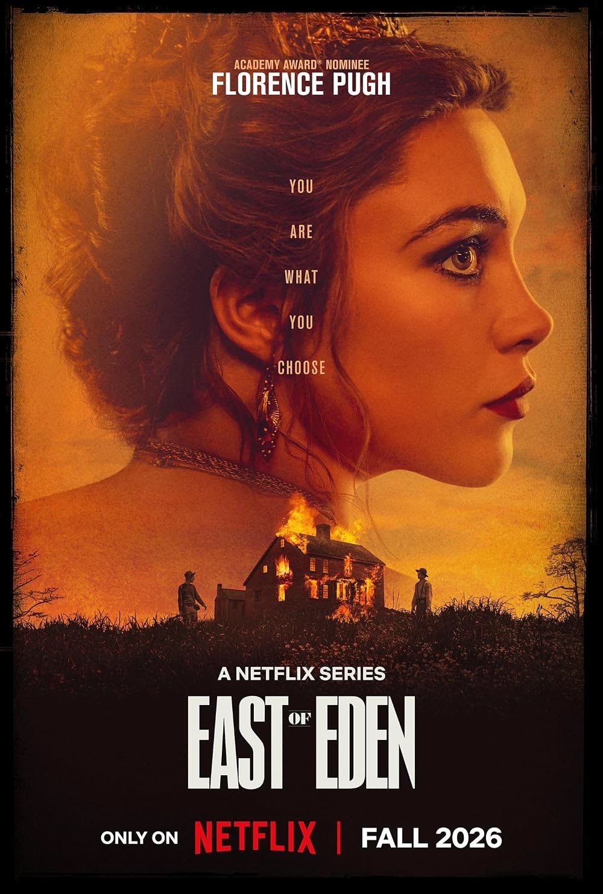
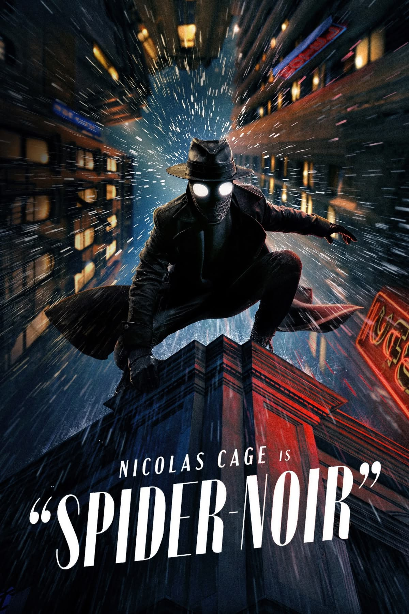
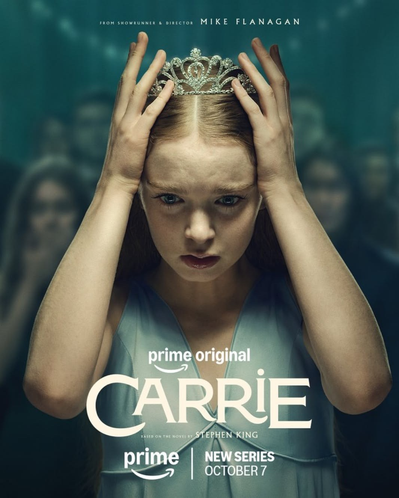
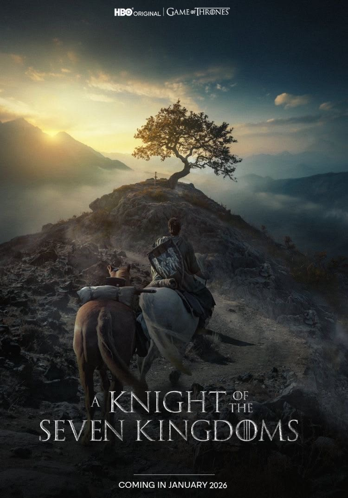

The Madison
Metai: 2026-
Režisierius: Taylor Sheridan
Aktoriai: Michelle Pfeiffer, Kurt Russell, Beau Garrett

Metai: 2026-
Režisierius: Taylor Sheridan
Aktoriai: Michelle Pfeiffer, Kurt Russell, Beau Garrett

Metai: 2026-
Režisierius: Dave Filoni, Matt Michnovetz
Aktoriai: Sam Witwer, Dennis Haysbert, Gideon Adlon

Metai: 2026-2027
Režisierius: Gaia Violo, Alex Kurtzman, Noga Landau
Aktoriai: Holly Hunter, Sandro Rosta, Karim Diane

Metai: 2026-
Režisierius: Tom King, Damon Lindelof, Chris Mundy
Aktoriai: Kyle Chandler, Aaron Pierre, Kelly Macdonald

Metai: 2026-
Režisierius: Christopher J. Byrne, Terry Matalas, Gandja Monteiro, Vincenzo Natali
Aktoriai: Paul Bettany, James Spader, Emily Hampshire
Metai: 2026-
Režisierius: Bruce Miller
Aktoriai: Chase Infiniti, Lucy Halliday, Mabel Li

Metai: 2026
Režisierius: Garth Davis, Laure de Clermont-Tonnerre
Aktoriai: Florence Pugh, Mike Faist, Christopher Abbott

Metai: 2026
Režisierius: Oren Uziel
Aktoriai: Nicolas Cage, Lamorne Morris, Li Jun Li

Metai: 2026-
Režisierius: Mike Flanagan
Aktoriai: Summer H. Howell, Matthew Lillard, Amber Midthunder

Metai: 2026-
Režisierius: George R.R. Martin, Ira Parker
Aktoriai: Peter Claffey, Dexter Sol Ansell, Daniel Ings